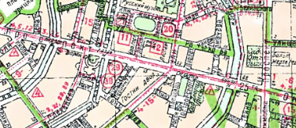

Микрособытие/С чужих слов(Слухи)/Воспоминание
Никулин Анисим Прокопьевич, 14/01/1942

Гостинный двор
Куйбышевский район,
25 октября пр-кт (Невский пр-кт), 35
59.93458413570021, 30.331250519577743
бомбардировка
пожар